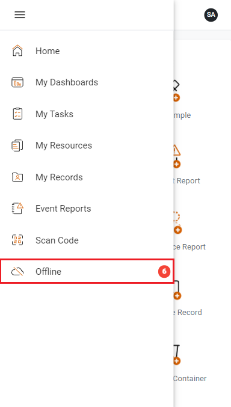

The Offline view displays public questionnaire, event report, sample, and waste templates that can be completed when you are not connected to the internet. You can also take an in-progress questionnaire or event report offline to complete.
When you are offline, a red ‘No Internet’ message will display at the top of your screen, and you will only have access to the Offline view.
When you are connected to the internet again and logged into myCority, any records you submitted offline will be automatically submitted in the background. A record will have a status of Auto-submission successful or Auto-submit failed. If auto-submission failed for a record, open the record to see why the record failed. Correct any errors and resubmit the record.

Before you go offline, you must configure an offline PIN that will be used to access myCority when you are not connected to the internet.
You will also need to ensure there are templates available for offline use, and/or select existing records to work on when you are offline.